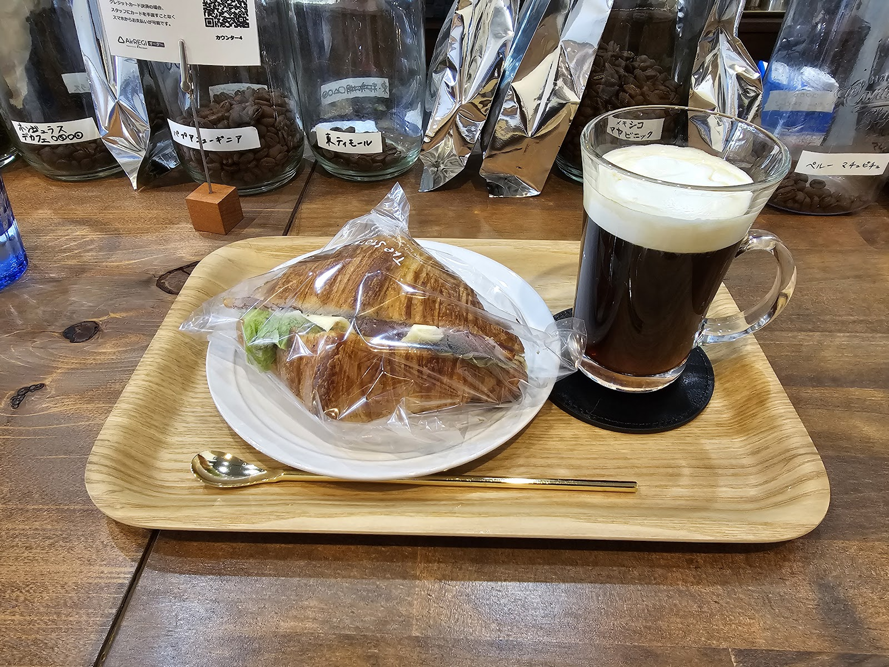
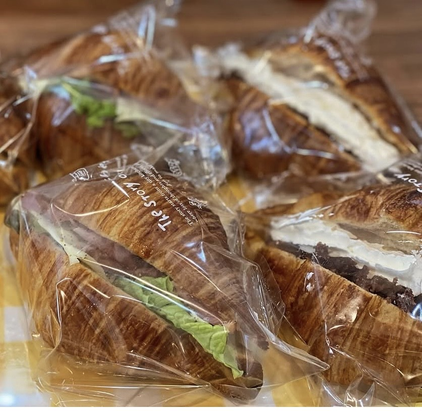
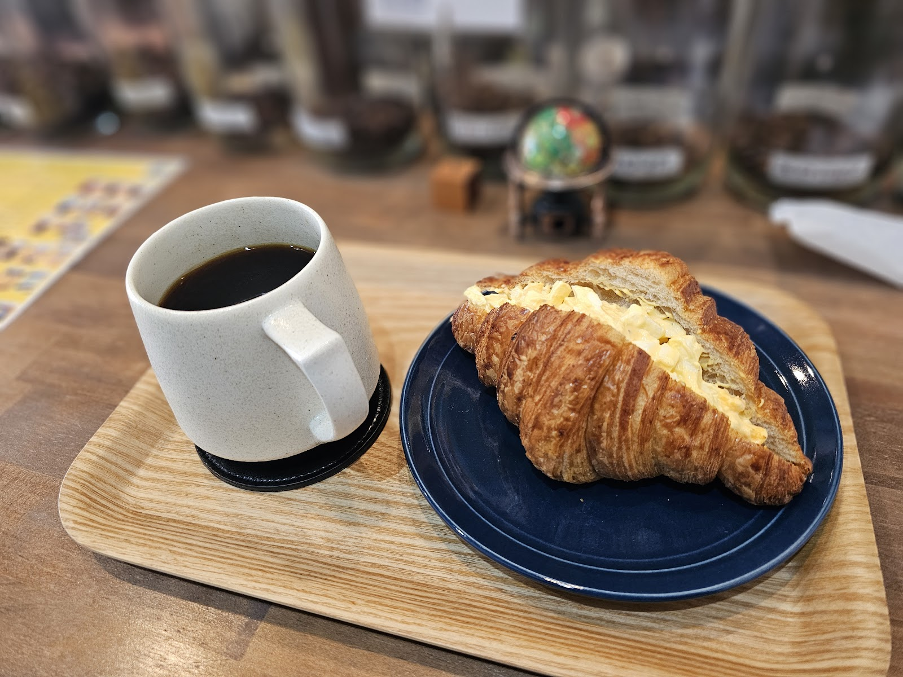

「珈琲いと」は、茨城県取手市でオーガニックコーヒーを提供する喫茶店です。豆へのこだわりと、木の温もりを感じる落ち着いた空間で、お客様それぞれの時間をゆっくりとお過ごしいただけるお店を目指しています。

写真: ショート(Googleマップ)
オーガニックコーヒーへのこだわり
カウンターには、コーヒー豆を保存する瓶が並んでいます。体にやさしいオーガニックのコーヒー豆を使用し、一杯ずつ丁寧にご提供することを大切にしています。ホットコーヒーはもちろん、アレンジしたコーヒーメニューもご用意しており、その日の気分に合わせてお選びいただけます。
木の温もりある空間と、選べる座席
店内は木目調のカウンター席と、ゆったりとしたテーブル席をご用意しています。本棚も置かれた落ち着いた雰囲気の中、おひとりでの読書やパソコンでの作業、ご友人との会話など、思い思いの過ごし方でご利用いただけます。

写真: 珈琲いと(Googleマップ)
コーヒーに合わせたフードメニュー
サンドイッチなどの軽食から、ケーキ・デザート、ボリュームのある一皿料理まで、コーヒーと一緒に楽しめるフードをご用意しています。詳しいラインナップはメニューページをご覧ください。

写真: ショート(Googleマップ)
おひとりの時間も、誰かとの時間も
ノートパソコンを広げて作業をされる方、本を片手にゆっくり読書をされる方など、店内では思い思いの時間を過ごすお客様の姿が見られます。おひとりでの来店はもちろん、ご友人との語らいの場としてもお気軽にお立ち寄りください。
Photo